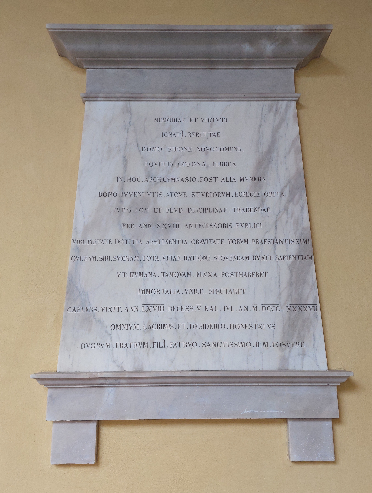

Ruolo: Professore di diritto romano e feudale (1779-1847)

"In memoria e virtù di Ignazio Beretta, originario di Sirone, Novocomense,cavaliere della corona ferrea. In questo archiginnasio, dopo altre opere intraprese egregiamente, virtuoso in gioventù e negli studi, fu professore pubblico per 28 anni di diritto romano e feudale, discipline da tramandare. Uomo straordinario per devozione, giustizia, temperanza e fermezza, il quale ritenne, con massima intelligenza, come somma sapienza da perseguire per la sua vita il lasciar da parte le cose passeggere e di rivolgersi unicamente a quelle immortali. Celibe, visse 68 anni, e morì il quinto giorno prima delle Calende di luglio, nell'anno 1847. Onorato dalle lacrime e dal rimpianto di tutti, i figli dei due fratelli posero (questa lapide) per lo zio beatissimo e benemerito."
"In memory and virtue of Ignazio Beretta, originally from Sirone, Novocomense, knight of the iron crown. In this archiginnasio, after other deeds excellently undertaken, righteous in his youth and studies, he was a public professor of Roman and feudal law for 28 years, disciplines to be remembered. An extraordinary man in devotion, sense of justice, temperance and firmness, he believed, with the utmost intelligence, that the greatest wisdom to pursue in his life was to set aside mortal matters and solely focus on immortal ones. Celibate, he lived for 68 years and died on the fifth day before the Kalends of July, in 1847. Honored by the tears and regret of all, his nephews placed (this headstone) for their most blessed and worthy uncle."